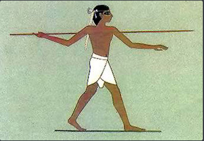

History of sports
- Home
- Types of sports
- Benefits of sports
- Negative aspects of sports
- Balance between physical and mental activities
- Cheating in sports
Definition of sports
The word "sport" comes from the Old French desport meaning "leisure", with the oldest definition in English from around 1300 being "anything humans find amusing or entertaining".
Other meanings include gambling and events staged for the purpose of gambling; hunting; and games and diversions, including ones that require exercise. Roget's defines the noun sport as an "activity engaged in for relaxation and amusement" with synonyms including diversion and recreation.
History
Artifacts and structures suggest sport in China as early as 2000 BC. Gymnastics appears to have been popular in China's ancient past. Monuments to the Pharaohs indicate that a number of sports, including swimming and fishing, were well-developed and regulated several thousands of years ago in ancient Egypt.
Ancient Persian sports such as the traditional Iranian martial art of Zourkhaneh had a close connection to warfare skills. Among other sports that originated in ancient Persia are polo and jousting.
A wide range of sports were already established by the time of Ancient Greece and the military culture and the development of sport in Greece influenced one another considerably. Sport became such a prominent part of their culture that the Greeks created the Olympic Games.
Professionalism became prevalent, further adding to the increase in sport's popularity, as sports fans followed the exploits of professional athletes – all while enjoying the exercise and competition associated with amateur participation in sports.